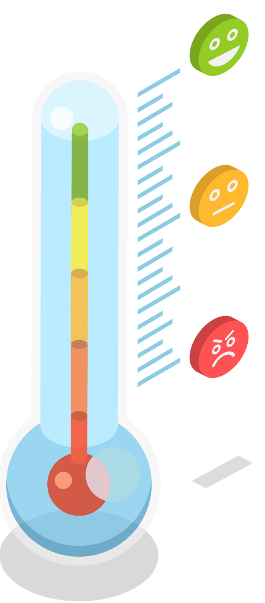

¿Qué es la orientación laboral?
La orientación laboral es un acompañamiento profesional que tiene como objetivo el empoderamiento de personas mediante la creación de proyectos laborales claros y alcanzables.
Identifica tu nivel de motivación
Posiciona el cursor en cada cara del termómetro y descubre en qué estado de motivación te encuentras en tu camino hacia la empleabilidad, y qué significa cada nivel.
